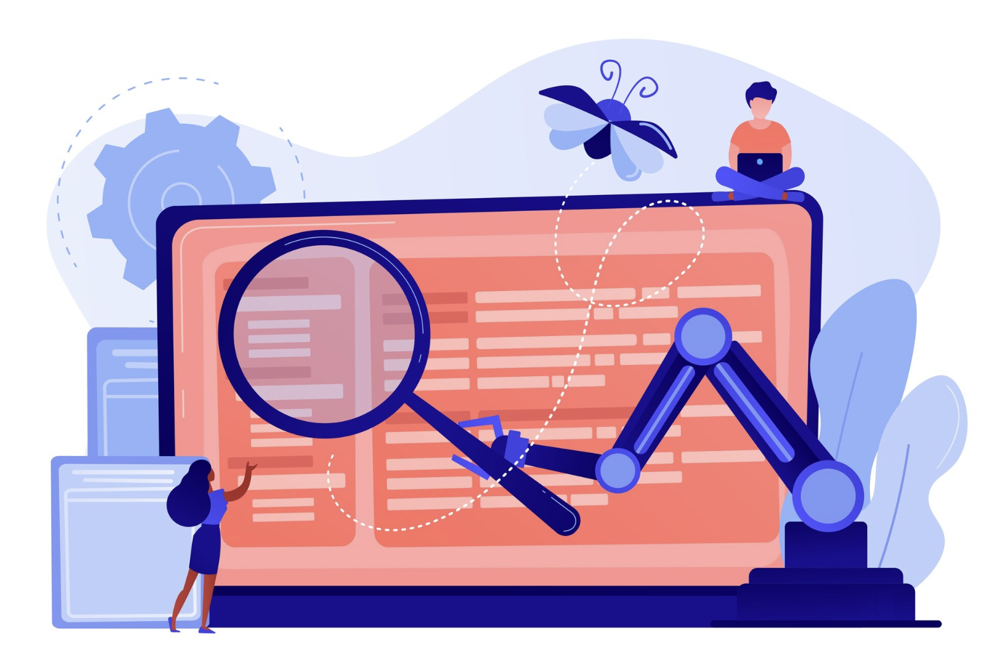

AI-basert prediksjon
Vi utviklet en maskinlæringsmodell som forutsier etterspørsel i logistikkbransjen. Løsningen bidrar til bedre planlegging, reduserte kostnader og økt effektivitet.
Her finner du et utvalg av prosjekter vi har gjennomført innen kunstig intelligens, maskinlæring og automatisering. Hvert prosjekt er et eksempel på hvordan teknologi kan brukes til å skape verdi for bedrifter og organisasjoner.
Vi utviklet en maskinlæringsmodell som forutsier etterspørsel i logistikkbransjen. Løsningen bidrar til bedre planlegging, reduserte kostnader og økt effektivitet.

Med en skreddersydd løsning for dataanalyse og rapportgenerering, kan virksomheter hente ut innsikt raskere og mer presist, samtidig som man frigjør tid til strategisk arbeid.
Vi implementerte en AI-drevet chatbot som håndterer kundesupport. Chatboten gir raske svar, øker tilgjengeligheten og reduserer behovet for manuell oppfølging.
Vi jobber kontinuerlig med nye ideer og samarbeid. Følg med for oppdateringer om kommende prosjekter innen prediktiv analyse, generativ AI og automatisering.